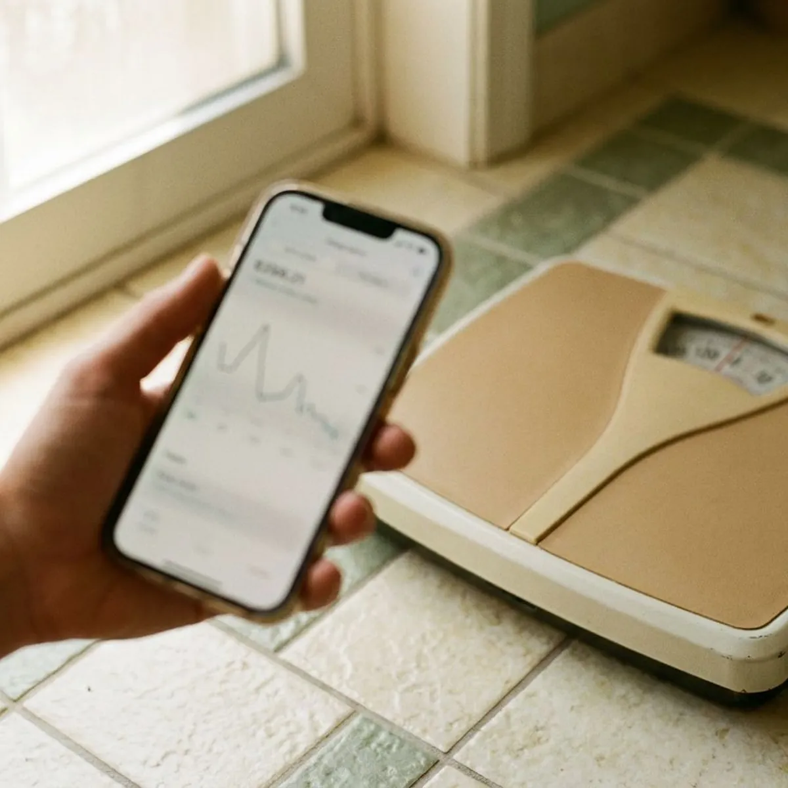

Weight Loss Maintenance in Jersey City, NJ
Losing the weight was phase one. Jersey City Weight Loss runs online maintenance plans for Jersey City, NJ patients who want the scale to stay put.
- Online provider check-ins
- Planned GLP-1 dose steps
- Medication shipped if prescribed
- Support after goal weight

- Licensed New Jersey Medical Providers
- Personalized Treatment Plans
- Discreet Home Delivery
- Ongoing Medical Support
Weight Loss Maintenance in Jersey City, NJ After GLP-1 Treatment
Jersey City Weight Loss treats maintenance as its own phase of care, with online check-ins every four to eight weeks. The Oakwell MD medical team adjusts semaglutide or tirzepatide one dose level at a time.
What the program includes:
- Review of your current GLP-1 dose and weigh-in trend
- Step-down schedule with four to eight weeks between changes
- Online check-ins with hunger scores and weight logs

Start a provider-planned maintenance phase in Jersey City, NJ.
Take the short online questionnaire and a provider will look at whether a taper or a maintenance dose fits you now.
Related GLP-1 Weight Loss Options in Jersey City, NJ
Every GLP-1 option Jersey City Weight Loss offers in Jersey City, NJ, from weekly injections to daily dissolving tablets, starts with the same provider review and ships to your door.


helped
Why patients choose us for Weight Loss Maintenance in Jersey City, NJ
Trial data from the STEP 1 extension showed roughly two-thirds of lost weight returning within 12 months of stopping semaglutide. That is why we step down slowly and watch the trend, instead of stopping on a date picked in advance.
- Planned Step-Downs, Doses come down one level at a time, with four to eight weeks between changes.
- Trend Tracking, Weekly weigh-ins and a 1 to 10 hunger score flag regain while it is still a few pounds.
- Protein and Strength, Your provider sets a protein target and suggests two strength sessions a week to protect muscle.
Anywhere in Jersey City
Check-ins happen online, so anyone in Jersey City or the surrounding area can weigh in from home and send results in a couple of minutes. If medication is prescribed, it ships from a licensed US pharmacy to your door.
Licensed care team
Each case is read by a Oakwell MD provider with experience in GLP-1 therapy rather than a scripted algorithm. Labs such as an A1c or lipid panel are requested when your history points that way.
Safety first
Gallbladder symptoms and pancreatitis are rare on GLP-1 drugs but stay on the screening list at every visit. Severe upper belly pain means stopping the medication and getting seen in person.
The care standards behind every Jersey City plan
Jersey City Weight Loss runs on the Oakwell MD clinical model: board-certified providers, US pharmacies that meet state and federal compounding rules, and follow-up that does not stop when the package arrives. Every treatment on this site goes through the same screening throughout Jersey City, NJ.
What Weight Loss Maintenance Looks Like in Jersey City, NJ
What Weight Loss Maintenance Means in Jersey City
Your body remembers its old weight. After a big loss, ghrelin tends to rise and resting energy use drops a little, so hunger comes back louder than it was before you started. A maintenance plan accounts for that instead of hoping it will not happen. On semaglutide or tirzepatide, this usually means stepping down a dose level rather than quitting on a random Tuesday. Weigh-ins every week or two give your provider the trend line.

Who Maintenance Care Is For
Patients who join have usually lost at least 10 percent of their starting weight on a GLP-1 or through diet and exercise. Some are at goal and want to cut their dose. Others already tried stopping on their own and saw the scale climb back up within a few months. Transfers count too. If you lost weight with another clinic, your provider continues from your current dose instead of starting over at the lowest one.
Dosing and Tapering Schedules in Jersey City
Tapers move one dose level at a time. A common pattern for Wegovy is stepping from 2.4 mg to 1.7 mg, holding for four to eight weeks, and only then deciding whether another step makes sense. Tirzepatide patients might go from 15 mg to 10 mg and pause there before considering 7.5 mg. Some patients settle on a steady lower dose and stay there for a year or more. Nothing changes until your provider reviews the last few weigh-ins.
What to Expect Week by Week
Week one after a step-down feels normal. Semaglutide and tirzepatide both have half-lives close to a week, so appetite tends to return gradually across weeks two to four rather than overnight. A swing of one to three pounds in that window is common and often just water. Your provider asks you to rate hunger on a 1 to 10 scale at each check-in. A steady climb over three or four weigh-ins usually means pausing the taper.
Side Effects on Lower Doses in Jersey City
Stomach effects ease on lower doses for most people. Occasional nausea or constipation can still show up, especially the day after the injection. Rarely, GLP-1 medications are linked with gallbladder disease and pancreatitis, and fast weight loss itself raises gallstone risk, so severe upper belly pain that spreads to the back needs prompt in-person care. More hunger is not a side effect here, it is the expected trade. Report vomiting that lasts over a day.
Eligibility and Screening
Screening repeats at every check-in, not just once. People who are pregnant or planning pregnancy should not use GLP-1 medications, and neither should anyone with a personal or family history of medullary thyroid carcinoma or MEN2. A past episode of pancreatitis or gallbladder surgery gets a closer look. Your provider also asks about insulin or sulfonylureas, since changing a GLP-1 dose can shift blood sugar. Patients who are not candidates get a plan built on protein targets and weekly weigh-ins instead.
How Maintenance Compares to Active Treatment in Jersey City
Active treatment climbs. Maintenance looks for the floor. In the STEP 1 extension, people who stopped semaglutide 2.4 mg regained about two-thirds of the weight they had lost within a year, and in SURMOUNT-4 patients switched from tirzepatide to placebo regained roughly 14 percent of body weight while those who stayed on it kept losing. That is the main argument for a planned phase instead of quitting cold. The target is a weight range you agree on, held with the least medication that works for you.

How the Online Process Works
Everything runs through a short questionnaire and secure messages. You enter your highest weight, current weight, current dose and the date of your last injection, plus a photo of your pharmacy label if you are transferring from another clinic. Your answers go to a licensed provider, who may write back with a question or two. Any prescription is filled by a licensed US pharmacy and mailed to you. Check-ins then happen every four to eight weeks.
Weight Loss Maintenance Near Me in Jersey City, NJ
Driving across Jersey City for a five-minute weigh-in gets old by month three. Maintenance only works if check-ins keep happening, and online visits make that a lot more likely for people with jobs and kids. Weigh-ins happen on your own scale.
Your provider needs four numbers to start: your highest weight, your current weight, your current dose and the date you started medication. Transfers should upload a photo of their current pen or vial label. Recent labs help but are not required.
Medication, when prescribed, ships to your door anywhere in Jersey City and nearby towns. The provider review is identical for someone 40 minutes out and someone downtown, because nothing about it depends on a physical office. Pens arrive in insulated packaging.
Is Weight Loss Maintenance right for you?
Five quick questions, then a licensed provider reviews your answers. No commitment.
Jersey City Weight Loss at a glance
- Online care for Jersey City, NJ and nearby
- Online visits, no office wait
- Medication shipped from licensed US pharmacies
- 4.8-star rated by 307+ Jersey City-area patients
Jersey City patients
- Population
- 291,657
- Visits
- Online, from anywhere in Jersey City
- Delivery
- Jersey City and communities nearby
- Nearby
- Hoboken, Bayonne, Kearny, Union City
Patients in Jersey City, NJ pick an online clinic for maintenance because a ten-minute check-in from home is easier to keep up for a year than a drive across town.
Jersey City map
Everything we treat in Jersey City, NJ
Weight loss is where most patients start. The same provider-reviewed, shipped-to-you model covers peptides, sexual health, hair, sleep and longevity.


How to Get Started With Weight Loss Maintenance in Jersey City, NJ
Three steps, all online, from your current dose to a maintenance plan.
Answer a Few Questions
The short online questionnaire asks for your weight history and your current medication and dose. Most people finish it in about ten minutes.
Provider Reviews Your Plan
A licensed provider reads your answers and decides between a steady lower dose and a gradual taper. They may message you with follow-up questions first.
Check In and Adjust
If medication is prescribed, it ships from a licensed US pharmacy to your door. Check-ins every four to eight weeks decide each next step.
Frequently Asked Questions About Weight Loss Maintenance in Jersey City
It fits people at or near goal weight who would like to lower their dose without losing ground. It also suits anyone who stopped a GLP-1 and has watched 10 or more pounds come back.
Lower doses usually mean milder effects, though occasional nausea or constipation can linger. Report severe abdominal pain or vomiting that will not stop, since those can point to pancreatitis or gallbladder disease.
Transfers are welcome and make up a good share of maintenance patients. Share your current dose and last injection date in the questionnaire so nothing restarts from zero.
Muscle loss is a real concern after rapid weight loss, so your provider sets a protein goal, often around 1.2 grams per kilogram of goal weight. Two strength sessions a week help hold lean mass.
Check-ins usually run every four to eight weeks, more often right after a dose change. You can message your provider between visits if your weight jumps or side effects return.
Coverage varies by plan, and a lot of employer plans still exclude anti-obesity drugs. HSA and FSA cards can often be used where your plan permits.
Trials show most people regain a large share of lost weight within a year of stopping a GLP-1 abruptly. Stopping is always your call, and a gradual step-down with weigh-ins makes regain easier to catch.
Wegovy and Zepbound are FDA-approved for chronic weight management, and both are approved for long-term use. Compounded semaglutide and tirzepatide are not FDA-approved, and your provider will explain that difference before prescribing either.
What patients say about Jersey City Weight Loss
Priya S.
I will never do needles, so the dissolving tablet was the only reason I tried this. Easy morning routine, discreet packaging, and the care team explained every step before I paid anything.
Semaglutide Pills · Newark, NJLaura S.
Honest from the start. The provider told me which option fit my history and why, and when I hit a plateau they changed the plan instead of just raising the dose. Felt like real medicine, not a subscription.
GLP-1 Weight Loss · Jersey City, NJEmily R.
I had tried everything short of surgery. The questionnaire took five minutes, a real provider messaged me the next morning, and the step-up schedule kept the nausea manageable. Four months in and I feel like myself again.
Semaglutide Injections · West New York, NJChris B.
After losing the weight I was terrified of gaining it back. The maintenance plan tapered me down with guidance and I have held steady for a year.
Weight Loss Maintenance · Newark, NJAngela W.
One tablet a day instead of three products. Six months in the thinning at my part has filled in noticeably and the check-ins kept me consistent.
Hair Growth · Kearny, NJMarcus T.
What sold me was that they did not just mail a kit. My provider adjusted my dose twice based on how I was feeling and actually answered my messages. Down more than I expected and my blood pressure is finally normal.
Tirzepatide Injections · Kearny, NJReviews reflect individual experiences. Results vary and treatment is prescribed only when clinically appropriate.
Areas We Serve Near Jersey City, NJ
Important safety information. GLP-1 medications (semaglutide, tirzepatide) are not for everyone. Do not use them if you or a family member have had medullary thyroid carcinoma or Multiple Endocrine Neoplasia syndrome type 2, if you are pregnant or breastfeeding, or if you have a history of pancreatitis without discussing it with your provider. Common side effects include nausea, constipation, diarrhea and reduced appetite. Compounded medications are prepared by licensed pharmacies and are not FDA-approved. A licensed provider decides whether any treatment is appropriate for you.